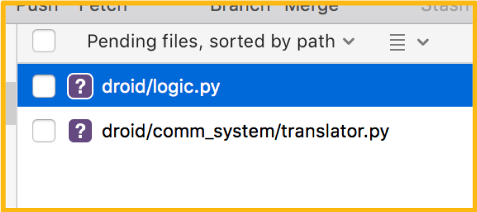
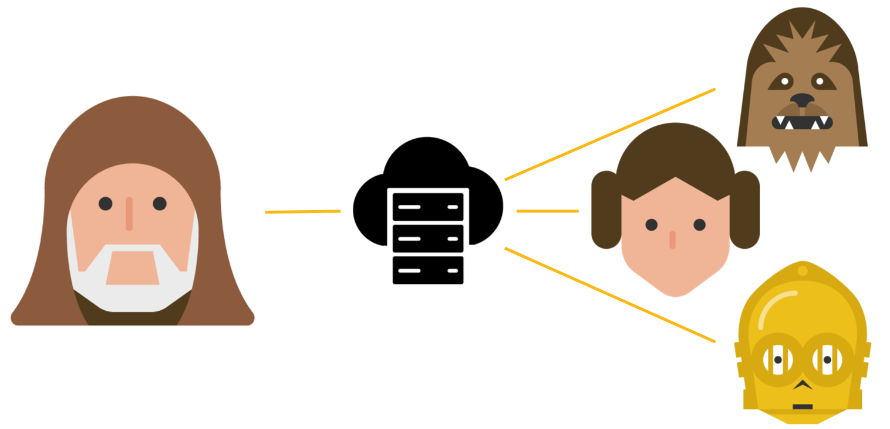
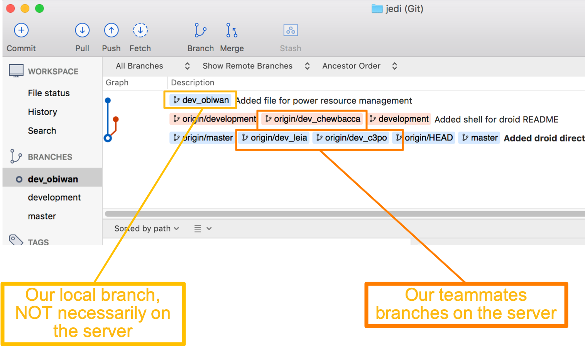

Basic Commands
SourceTree
This section aims to provide a solid foundation for the basic commands required to use Git. To understand the applicability of the basic commands, this tutorial will follow a scenario.
Note the arrow(s) in the bottom-right corner that controls navigation through the lesson. You may also navigate by pressing ESC and using the arrow keys.
Types of Repository Storage
There are two ways a Git repository can be stored and managed: locally on a personal computer or remotely on a server. Storing remotely permits distributed teamwork. It is worth noting that a locally stored repository can be moved to a server if desired.

Local Computer

Remote Server
Let's first consider local storage.
Creating a Local Repository
To create a local repository using SourceTree, go to the Local tab and select
New... > Create Local Repository

Creating a Local Repository
Specify the destination folder for the new repository.
This path should NOT be your home folder. The path should be the specific directory location of the desired repository. This may require you create a directory, if one does not exist.
Creating a Local Repository
You can now see the new repository in the list.
In SourceTree, you can double-click to view it.

Viewing Local Repository
This is the initial view you will have of your empty repository.
Let’s start adding files!
Adding a File
To add a file, you’ll need to open either a Finder (Mac) or Explorer (Windows) window or use the command
line to create a file. Creating files is NOT done in SourceTree.
Let’s add some fake files as an example.

Viewing Local Changes
Here we've added a directory (droid) for software used in developing dummy droids for Jedi training. Inside the directory is a file and a subdirectory with a file.
Let’s analyze the relevant new pieces here.

Viewing Local Changes
In the upper left, we can see that the “Commit” button has the number ”2” above it.
This is because SourceTree sees two new files.
Viewing Local Changes
We can also see the files that have been added or changed.
Viewing Local Changes
For each file we can view the files contents.

Viewing Local Changes
To understand a little better the process of committing new files in Git, let’s first change the view of the pending files. Select the four horizontal bars, as shown here. Currently we have ”No staging” selected. Let’s select “Split view staging”.

Viewing Local Changes
This configuration helps us see which files are staged for commit.
Let's talk about what "staging" means! Click the right arrow.
Staging Changes
Staging refers to a state between making changes and committing them to a repository.
Basic Git Phases
Unstaged < --- > Staged ---- > Committed
(2-way) (1-way)
While there are ways to go straight from file changes to committing without staging, it is best practice to stage files prior to committing them. It's also worth noting that files can be staged and unstaged, but once you commit, you cannot undo. (Well, technically you can, but it’s not as straight forward and is covered in more advanced topics.)
Staging Files
To stage the files we’ve added to the repository, you can either drag-and-drop the files from the “Unstaged files” section to the “Staged files” section or select the checkboxes next to the files themselves.
Staging Files
Here we can see the newly staged files. You may notice that their icons have changed. Previously the icon was a question mark, indicating it was an untracked file. Here it is a plus sign, indicating it is a newly-added file.

SourceTree Icon Cheat Sheet
This is a cheat sheet for SourceTree icon definitions.
Committing Changes
Now that we've staged the files we want to commit, select the Commit button.

Committing Changes
Now that we’ve selected Commit, we must add a message to describe the changes.
Committing Changes
Following Good Practices
It is good practice to provide a descriptive message, even if it just describes the files you added. If there was a purpose to a file change or addition, it’s good to put that in there too. Do NOT simply type “Nothing” as the commit message. This is NOT useful to other team members, as they cannot determine the general changes you made by viewing the commit message.
Be a good developer and communicate the intent of your work.
Committing Changes
Now that we’ve added a message and hit Commit, we see this screen. What is this screen telling us? It is telling us that there have been no changes to our repository since the last commit we made. Let’s view the history of the commits now. Select the History item under Workspace

Viewing Commit History
Here we can see the commit history of our repo. Notice the most recent commit we just made.
Resetting Changes
Now let’s talk about resetting changes. Here we have modified the logic.py file. We can see the details of the change on the right-hand side. The lines in red represent the old lines, whereas the lines in green represent the new lines. We can also see the change in icon to a gold ellipsis.
Resetting Changes
To reset the changes made to this file, right-click on the file within SourceTree and select Reset.... Note that we also see Reset to Commit…. This latter option is only useful if we want to reset the file to some commit further back in history, not immediately previous to your current state. You will likely receive a prompt asking you if you are sure you want to do this. If you are, select Yes. In this case, you'll return to the empty File Status screen.

Let's now consider working with a remote server.
(Link opens in new page)
Clone Down Repository from Server
Everything we have been doing so far has been on our local machine, but now we want to interact with a server, so that other team members can develop simultaneously. Let's assume we already have a project created on a server. If you return to the initial figure that SourceTree brings up, you will need to select the Remote tab in the top-left.
If you cannot see any repositories or get a warning about not being able to connect, you need to make sure your password is correct in your SourceTree account settings.
(Click the right arrow for the next step)
Clone Down Repository from Server
Assuming you can view the repositories though, you will see all the repositories on the server that you have been granted access to. You can also use the top-right search bar to narrow the selection down. Select Clone from the right-side of the repository you wish to clone down. You will see a pop-up window asking you where you would like to save the repository. Again, ensure the destination path includes a legitimate folder and is NOT your home directory .
Common Cloning Issue
Sometimes when cloning, you may see a hyperlink shown by the top image.
If you click the link, you may see details like those in the bottom image.
Specifically, note the following two lines:
fatal: Could not read from remote repository.
Please make sure you have the correct access rights and the repository exists
This is the most common cloning issue you may face.
There are a few possible causes for this. Click the right arrow
for problem analysis steps.
(In this example, the error was caused by disconnecting from the internet)
Common Cloning Issue
Problem Analysis
-
Are you connected to the internet?
The error was triggered by disconnecting from the Internet - Do you need to be connected to your organization's VPN? If so, are you?
-
Can you view the repository on the server / from a browser?
- If so, then ensure you've configured your security protocol.
- If not, then you likely do not have access to the repository. You may need to contact your organization's admins about this.
Viewing Remote Repository
Assuming you did not run into a cloning issue, a figure should open for managing the repository. If you navigate to the History section, you will see the commits we made previously. Please note that these commits exist on the remote server only because I pushed them up there. They do not magically place themselves on the server without someone commanding this change.
Viewing Remote Repository
While this looks very similar to what we saw before for our local repository, notice the new branch names listed under the description.
Viewing Remote Repository
Any branch name that begins with origin/ represents a branch on the server.
It is called origin because that is the default name for the server.
This can be changed, but it’s usually not necessary.
You will see we have one branch called master and another called origin/master.
The one pre-pended with origin/ is what the server sees,
whereas the other is was your local machine sees.
These can be at different commits, depending on whether or not changes have been pushed to the
server.
You can also see the icon with three circles connected by lines.
This indicates it is a branch.
There are other items called tags that are covered elsewhere and have a different icon.
Create a New Branch
Branching is key to team workflow.
Creating a branch is cheap and easy.
Select the Branch button from the top menu.
You will see a drop-down menu such as the bottom figure here.
Make sure New Branch is selected.
Name the new branch (here we call it development.
While we have been working on the master branch in our local repository,
this is typically BAD practice when working with a remote repository and with a
team.
The master branch should remain stable as much as possible,
so no development should be done on master
.
(Click the down arrow for more details on branch creation options)
Create a New Branch
To explain the radio buttons next to “Commit”:
Working copy parent indicates that we are branching off our
current branch’s last stable commit.
Specified commit indicates that we want to branch off a specific commit in history.
Checkout new branch indicates that we want to checkout
or begin using our newly created branch immediately after we create it.
Create a New Branch
Now we can see that the development branch has been created AND we have checked it out. You can see which branch is checked out by viewing the branches under the BRANCHES section (which you may need to reveal). The currently checked out branch is listed in bold with a circle next to it.
Create a New Branch
Individual developers should create their own, unique branches for development. Here, Obi Wan creates one for himself. Again we are going to checkout the new branch upon creation.
Checkout a Different Branch
Now that we have our individual branch, let’s see how we could checkout another branch. We can see on the left that our current branch is dev_obiwan. Let’s say we want to checkout the development branch. Right-click on the branch you want to checkout and select Checkout development (or whatever the branch name is). You will then see that the development branch has been checked out.
Pushing Changes to Server
Okay so let’s make a change in push it to the server. Why do we push our changes to the server? Well, because when you positively contribute to the code base, you need to share them with the rest of your team, whom also have access to the server. In this way, the distributed work becomes synchronized.
Pushing Changes to Server
In this example, let’s say we created a new script for managing power loads of the droid. We create, stage and commit the power.py file to our local branch.

Pushing Changes to Server
We can see that Chewbacca has also some pushed updates to the repository. We’ll pull in those changes soon, but let’s go ahead and push our changes out.
Pushing Changes to Server
Select Push from the top-menu. In the pop-up menu, select the branch that you want to push – in this case it is only dev_obiwan. You will be pushing to the origin repository, unless you named it otherwise. We are not covering tags in this section, so do not worry about checking that box.
Pushing Changes to Server
Once you select OK and push, you will see that origin/dev_obiwan has been added to the branch graph and is up-to-date with the local branch.
That's it! Now other users can pull in your changes!
When a Push Fails
Sometimes a push is rejected by the server. This usually occurs when you need to pull updates from the server before pushing updates from your local branch.
Note the hints that SourceTree is trying to give you:
Updates were rejected because the remote contains work that you do not have locally.
You may first want to integrate the remote changes before pushing again.
So to resolve this, we’ll need to pull updates first.
Fetching Changes from the Server
Git uses the term fetch to indicate it is grabbing updates from the server
and storing them locally -- but is NOT integrating them into any of your local branches.
To fetch updates, select the Fetch button from the top-menu.
You will likely only need to check the box Fetch from all remotes.
(The other options are beyond the scope of this section).
Fetching Changes from the Server
You will notice that we fetched another update from Chewbacca’s branch. He has not merged his latest change into the development branch, so we’ll assume he’s still in development for now. Let’s merge in the latest updates from the development branch.
Merge Changes from Branch
To merge in changes from another branch or commit, select Merge from the top menu. Make sure you select Merge from Log. Select the commit that you want merge in. In our case, we want to merge in the HEAD of the development branch.
Merge Changes from Branch
To explain the options at the bottom:
- Commit merge immediately (if no conflicts) :
This will make a commitment saying you’ve merged in changes from another branch
immediately upon merging.
- Include messages from commits... :
This is pretty self-explanatory
- Create a commit... :
The tricky part here is fast-forward.
If a branch has been updated on the server but the local branch has not,
sometimes it is just like fast-forwarding the branch in time through the Git history.
In this case, we do not typically need a new commit, but the option is here if you do want it.
- Rebase instead of merge... :
Rebasing is an advanced topic outside the scope of this section,
so don’t worry about it and simply leave it unchecked.
Merge Changes from Server
If there is a problem encountered when SourceTree is merging,
this is known as a merge conflict.
Merge conflicts are covered elsewhere
(link opens in new tab).
Now that we’ve merged, we see the branch graph has updated to show how our local
dev_obiwan branch merged in updates from the HEAD
of the development branch.
Merge Changes from Server
You will also notice that the Push button has a 2 above it. This indicates that our local branch is 2 commits ahead of the equivalent branch on the server.
Merge Changes from Server
If we push our changes to the server, you will see that the server also updated the branch.
Pull Changes from Server
While it is best practice to pull from the main development branch,
there may be causes where you will want to pull from another developer’s individual branch.
For example, maybe you and another programmer are working on a task in tandem.
In this scenario, let’s pull in the extra work Chewbacca has done.
Select Pull from the top menu and specify Chewbacca’s development branch.
This pop-up window looks similar to that of a merge.
Pull Changes from Server
You will see that our local dev_obiwan branch has been updated to include Chewbacca’s latest changes. Of course, at this point, you could push to the server again if you wanted.
Fetch vs. Pull
In Git, a pull essentially a fetch followed by a merge.
git pull = git fetch + git merge
Click here for a more detailed explanation
(link opens in new tab)
There can be conflicts introduced when performed git pull,
specifically if the updates from the server fail to merge smoothly with your local branch.
Conflict resolution is covered here
(link opens in new tab)